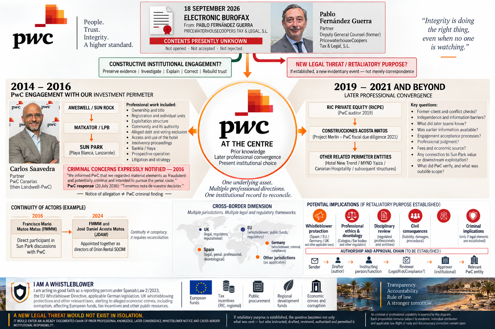

{kind=link}
{kind=link}
Junta de la Comunidad
Carlos, Miguel y Elena aparecen en el frente de propietarios privados/Comunidad. La facturación PwC registra estrategia y asistencia.
EMPEZAR AQUÍ · ESTADO INSTITUCIONAL ACTUAL · 18 SEPTIEMBRE 2026
Esta es la ruta de primera lectura para Legal, Risk, Compliance de PwC y cualquier revisor independiente que llegue desde la correspondencia institucional. Separa cronología verificada, alegaciones y puentes probatorios pendientes antes del expediente detallado.
Control de versiones. El registro público conserva etapas identificables: escalado institucional de 19 de agosto; cierre del censo probatorio de 1 de septiembre; ampliación de relaciones profesionales posteriores de 12 de septiembre; y nueva comunicación de persona informante/preservación de 18 de septiembre. La imagen exacta enviada el 18 de septiembre se conserva sin modificación. Mientras continúa la interrupción de acceso a la cuenta GitLab, GitHub es el registro operativo de trabajo; el espejo público GitLab puede quedar rezagado y se controla mediante conciliación ruta por ruta, no como fuente de verdad competidora.
PD-SP-P-0036 · CARET_CONFIRMED · ACTIVO VISUAL CANÓNICO
El perfil nominal exacto de LinkedIn lo identifica como socio nacional de PwC en Santa Cruz de Tenerife. El perfil oficial de PwC España confirma el nombre completo, su condición de socio y la dirección de la práctica jurídica de Canarias.
Límite ^ y de imagen. El retrato y los perfiles reconcilian identidad y contexto profesional. No prueban conducta, mandato en una fecha, recepción, transferencia de conocimiento, conflicto, uso de información, causalidad, beneficio, responsabilidad ni ilícito. La imagen no sustituye las fuentes de cada proposición.
PWC · CARLOS SAAVEDRA · CLIENTE PREVIO → AVISO DE VÍA PENAL → CONVERGENCIA POSTERIOR ACOSTA/RICPE → RECONCILIACIÓN DEL CONFLICTO
Aweswell Limited es la holding británica e inversor extranjero situada en la cabecera de la estructura de inversión relevante en España. El registro conservado documenta representación formal de PwC Legal UK y trabajo intensivo de Landwell/PwC Canarias sobre Sun Park, LPB, Matkator, Comunidad, unidades privadas, deuda alegada, concurso, accesos y estrategia.
LA CUESTIÓN DE CONFLICTO / CONGRUENCIA
2016: conocimiento detallado del cliente previo + instrucción expresa de abandonar una respuesta exclusivamente civil y acudir a la vía penal → posteriormente: convergencia profesional documentada de PwC/Carlos con RICPE / Grupo Acosta Matos y otros intereses hoteleros relacionados.
La cuestión central no es si la proximidad posterior resulta incómoda. Es qué base de conflicto, antiguo cliente, confidencialidad, independencia y gobierno de información permitió cualquier encargo posterior con un perímetro contraparte/beneficiario solapado después de que PwC hubiera adquirido información estratégica y potencialmente adversa de su cliente anterior.
Control de precisión: la correspondencia de julio de 2016 que se conserva no contiene, por ahora, un reconocimiento separado redactado por Carlos. Muestra a Carlos en copia en la instrucción del 16 de junio y en el intercambio de 19–20 de julio. Miguel Hernández/PwC respondió: “Tomamos nota de vuestra decisión.” La proposición segura es, por tanto, conocimiento y reconocimiento del equipo PwC, con Carlos en copia, salvo que aparezca una fuente adicional redactada por Carlos.
Basado en evidencia · máximo escrutinio · sin conclusión de ilícito
Límite editorial. Esta página no afirma como hecho probado que Carlos Saavedra o PwC “cambiaran de bando”, utilizaran información confidencial, incurrieran en infracción deontológica o ayudaran a una conducta ilícita. Documenta la secuencia y exige identificar las salvaguardias, controles de conflicto y límites de los mandatos.
1 · Qué sabía y qué hacía Carlos/PwC en 2016
CARLOS / PWC — REGISTRO CONTEMPORÁNEO DE TRABAJO
El propio anexo de PwC registra a Carlos coordinando el equipo, definiendo estrategia, preparando y asistiendo a la Junta de Sun Park de 26 de abril, planificando estrategia con Juan Tomás Parrilla y coordinándose con Cuatrecasas.
IMPLEMENTACIÓN CONTENCIOSA · 12–16 MAY 2016
La cadena primaria organiza citas notariales para poderes generales para pleitos de LPB y Simon Peter Thompson a favor de procuradores y de los abogados PwC Carlos Saavedra, Miguel Hernández y Elena Santos. Acredita una vía concreta de implementación de impugnaciones, más allá de asistir a una reunión. Sin los instrumentos ejecutados, no se afirma que fueran firmados, aceptados, utilizados o siguieran vigentes.
INFORME + EQUIPO PWC · 6–10 JUN 2016
Jonathan Simó remitió informe y mayores contables; Miguel/PwC contestó “Nos parece bien. Tiremos con esta versión”. Carlos, Elena y Alejandro Perera figuraban en copia, y PwC coordinó la reunión del 10 de junio. Un correo de esa misma noche dijo que el informe de Jonathan era el llevado a la reunión. Esto prueba transmisión, revisión, aprobación expresada y coordinación; no prueba lectura de cada copiado, asistencia de Alejandro, identidad del cuerpo nativo v4 no recuperado ni entrega al Administrador Concursal.
AVISO DEL CLIENTE A PWC · 16 JUN / 19 JUL 2016
La correspondencia conservada dice que el cliente no quería más reuniones con la familia Molina y quería “una querella personal”; el 19 de julio Patricia reiteró que “lo único que queríamos es la vía penal contra esta gente”. Carlos estaba en copia.
RECONOCIMIENTO DE PWC · 20 JUL 2016
Miguel Hernández/PwC respondió, con Carlos en copia: “Tomamos nota de vuestra decisión”, explicando al mismo tiempo el plazo de caducidad de la impugnación civil. Esto prueba recepción/reconocimiento institucional por el equipo PwC; no debe atribuirse como una frase redactada personalmente por Carlos.
2 · Una sola secuencia de 2016
Carlos, Miguel y Elena aparecen en el frente de propietarios privados/Comunidad. La facturación PwC registra estrategia y asistencia.
PwC desarrolla poderes generales para pleitos de LPB y Simon Thompson que nombran a Carlos, Miguel y Elena entre los abogados. El registro prueba preparación, no ejecución.
Jonathan remite el informe y los mayores; Miguel/PwC aprueba seguir con la versión, con Carlos, Elena y Alejandro en copia. PwC coordina la reunión profesional del 10 de junio, que aborda la arquitectura económica y jurídica. El 16 de junio el cliente indica apartar el documento entonces en curso y dirigir la respuesta hacia una querella personal en vez de más reuniones. La ruta heredada «11-Jun» se mantiene solo como alias de historial de versión.
PwC dice que está ultimando la impugnación del 26 de abril. Patricia responde que la vía deseada es penal. Miguel/PwC contesta que toma nota de la decisión. Carlos permanece en copia en el intercambio material.
La correspondencia conservada registra que PwC había hablado directamente con el Administrador Concursal sobre la ruta del touroperador/nuevo contrato de explotación; Patricia pide después que se documente por escrito qué se dijo y qué respondió el AC.
Pregunta de “escudo protector”: una vez que PwC sabía que el cliente calificaba la conducta como potencialmente penal y pedía esa vía, ¿qué riesgos identificó, escaló, derivó, preservó o decidió no asumir PwC, y dónde está el registro profesional de esa decisión?
3 · Relaciones PwC posteriores · tabla probatoria entidad por entidad
| Fecha | Entidad / persona PwC exacta | Cliente / proyecto | Capa de fuente primaria | Qué acredita | Qué no acredita |
|---|---|---|---|---|---|
| 2019 | PricewaterhouseCoopers Auditores, S.L. | RIC Private Equity | Historial de auditoría RICPE/CNMV | Relación formal de auditoría PwC con RICPE en FY2019. | Que Carlos/Landwell trabajara en Sun Park, que el auditor validara el título Sun Park o que se utilizara información de antiguo cliente. |
| 4 jun 2020 | PricewaterhouseCoopers Auditores, S.L. | RICPE; el material inversor incluía también el proyecto Sun Park / Acosta Matos | Material inversor RICPE | El papel auditor PwC y el proyecto Sun Park coexistían dentro del mismo ecosistema inversor RICPE. | Un encargo PwC sobre Sun Park, validación de propiedad/título o conocimiento por todos los equipos PwC. |
| mar 2021 | PwC — entidad/equipo exactos del encargo pendientes de producción | Project Merlin / Construcciones Acosta Matos | Informe público RICPE que dice que PwC inició due diligence fiscal | Un mandato profesional posterior de PwC para CAMSA sobre otro proyecto. | Identidad con el equipo Sun Park 2016, mandato Sun Park, uso de información de antiguo cliente o infracción de conflicto. |
| publicaciones 2021–2022 | Enrique Guerra — la entidad/capacidad PwC exacta requiere los registros de encargo | Solapamiento profesional RICPE / PwC | Publicaciones de RICPE describieron a Guerra como asesor/Off Counsel de PwC mientras desempeñaba funciones RICPE; la biografía actual de RICPE presenta la función PwC como anterior | Un solapamiento profesional fechado que exige verificar entidad exacta, cliente, encargo, cronología e independencia. | Transferencia a Guerra del conocimiento de Carlos Saavedra de 2016, conocimiento colectivo de PwC o prueba de que PwC realizara toda revisión que se le atribuye. |
| 1–5 mar 2021 | PwC UK Risk / PwC España Legal & Compliance | Queja Sun Park / RICPE | Correspondencia directa PwC | El aviso institucional alcanzó UK Risk y el canal del Deputy General Counsel / Chief Compliance Officer de España. | Qué comprobaciones internas se hicieron, quién accedió a archivos históricos o qué filtro se aplicó a encargos posteriores. |
| 2022–2024 | Carlos Saavedra / entorno profesional público PwC | Entornos profesionales RICPE / MYND / Grupo Acosta Matos | Material de eventos públicos | Proximidad profesional posterior documentada con presencia personal de Carlos. | Mandato sobre el mismo activo, encargo adverso, transmisión de información confidencial, deslealtad o responsabilidad. |
| 2026 | Carlos Saavedra; Socios Inversores Canarios, S.L. | Perímetro de consejo que incluye Grupo Acosta Matos representado por José Daniel Acosta Matos | BORME / registro societario | Convergencia profesional/gobernanza posterior formal susceptible de comprobación documental. | Que la función se refiera a Sun Park, que un honorario derive de valor Sun Park o que exista quid pro quo. |
Límite del beneficio económico. Una relación profesional posterior no equivale a un flujo de pago trazado. El registro público actual no contiene todas las facturas posteriores de PwC, pagadores, registros bancarios o trazado de origen de fondos. Se solicitan precisamente porque pueden acreditar o descartar el puente económico alegado.
RASTRO DE AVISO INSTITUCIONAL · UK RISK → LEGAL/COMPLIANCE ESPAÑA → OGC
| Fecha | Canal PwC documentado | Qué registra la correspondencia conservada |
|---|---|---|
| 1 mar 2021 | PwC UK · Regulatory & Commercial Disputes / Risk | Polly Miles confirmó que, tras hablar con Gil Marer, elevó las preocupaciones al Head of Risk Management de PwC. |
| 5 mar 2021 | PwC España · Deputy General Counsel + Chief Compliance Officer | Pablo Fernández Guerra dijo que la red PwC le había trasladado la queja Canarias / Sun Park y propuso una llamada con Carlos del Cubo. |
| 8 mar 2021 | PwC España Legal/Compliance + destinatarios UK | El canal recibió el paquete Sun Park/RICPE, incluida la denuncia CNMV y material inversor/proyecto relacionado. |
| 2023 | PwC UK OGC | El espejo público GitLab registra un traslado posterior a OGC que resumió los bloques de alegaciones y solicitó la correspondencia subyacente; las conclusiones internas exactas no se han producido. |
Límite. Esto prueba enrutamiento institucional y aviso sostenido, no el contenido ni el resultado de una investigación interna PwC. La petición finita sigue siendo el expediente de revisión, preservación, accesos, conflictos, filtro de encargos y decisiones.
CONTRASTE EQUITATIVO · QUÉ PUEDE MOSTRAR EL EXPEDIENTE INTERNO
Los registros pendientes pueden mostrar que los hechos posteriores pertenecían a firmas PwC jurídicamente distintas, equipos separados y activos no relacionados; que se realizaron comprobaciones eficaces de antiguo cliente/conflicto e independencia; que los archivos históricos Sun Park estaban debidamente restringidos; que operaron barreras de información o recusaciones; que no se transmitió ni utilizó información confidencial Sun Park; que no existió un mandato posterior Sun Park ni remuneración derivada de Sun Park; y que el burofax electrónico tenía una finalidad independiente fijada antes del aviso de 18 de septiembre.
Por qué importa. No son concesiones ni presunciones. Son explicaciones falsables. La finalidad de la preservación y de las peticiones documentales finitas es permitir que los registros primarios de PwC las acrediten si son ciertas.
4 · Por qué la secuencia crea un problema concreto de conflicto
ANTIGUO CLIENTE / CONFIDENCIALIDAD
PwC tuvo acceso a estrategia, posiciones de la Comunidad, cuestiones de propietarios privados, títulos/escrituras, concurso, deuda alegada, accesos y gobierno. ¿Qué información seguía siendo confidencial y relevante al considerar después asuntos Acosta/RICPE?
ACEPTACIÓN DEL CONFLICTO
¿Qué búsqueda de conflictos, mapeo de partes relacionadas, consentimiento o waiver, revisión PwC Legal/Risk, análisis de independencia o recusación se realizó antes de cualquier encargo solapado?
BARRERAS DE INFORMACIÓN
¿Qué sistemas PwC conservaron los archivos de 2016, quién podía acceder, qué búsquedas al abrir nuevos asuntos los detectaron y qué barreras o controles se implantaron?
CONGRUENCIA ENTRE ACTIVOS
Cuando Carlos/PwC trabajó posteriormente con el perímetro Acosta Matos/private-equity en otros activos hoteleros, el repositorio debe mapear cada encargo por fecha, entidad PwC, cliente, activo, función y situación de honorarios/nombramiento. La repetición puede aumentar la relevancia de la investigación del conflicto, pero no prueba por sí sola una infracción.
La pregunta que PwC debería poder contestar directamente: después de que el equipo Sun Park de 2016 recibiera la instrucción expresa del cliente de acudir a la vía penal y acumulara información estratégica detallada, ¿sobre qué base documentada de gestión de conflictos se aceptó trabajo profesional posterior con el perímetro solapado Acosta Matos / RICPE, y qué salvaguardias protegieron la información y los intereses del antiguo cliente?
5 · Matriz de congruencias que debe mantenerse en el repositorio
| Dimensión | Prueba obligatoria en repositorio |
|---|---|
| Persona / entidad PwC | ¿Carlos personalmente, Landwell/PwC Tax & Legal, PwC Auditores u otra firma miembro? No colapsar entidades jurídicas distintas. |
| Información previa | ¿Qué información Sun Park/Aweswell/LPB/Matkator fue realmente recibida, creada o accesible en 2016? |
| Cliente/perímetro posterior | ¿RICPE, CAM/Grupo Acosta Matos, HNT, MYND, Canarian Hospitality u otra parte conectada? |
| Solapamiento de activo | ¿Sun Park, otro activo hotelero Acosta o un vehículo inversor más amplio? |
| Función / mandato | ¿Auditoría, jurídico, fiscal, transacción, financiación, gobierno societario, secretaría societaria, fondos públicos u otro asesoramiento? |
| Controles de conflicto | ¿Búsqueda de conflicto, aprobación Legal/Risk, independencia, consentimiento/waiver, barrera de información, recusación y controles de acceso DMS? |
| Estado probatorio | Hecho verificado, registro público, declaración institucional, inferencia, pregunta abierta o brecha probatoria. |
Regla de publicación: no utilizar “cambio de bando” como hecho establecido salvo que se prueben el mandato posterior adverso y el conflicto jurídicamente relevante. La formulación pública es convergencia profesional posterior que crea una cuestión documentada de antiguo cliente/conflicto.
6 · Seis preguntas finitas para PwC Legal, Risk y dirección
¿Qué entendió PwC de las instrucciones de 16 de junio y 19 de julio de pasar a la vía penal, y qué asesoramiento, derivación, escalado o decisión de cierre siguió?
¿Aceptó Carlos o alguna entidad PwC trabajo posterior para RICPE, Grupo/Construcciones Acosta Matos, HNT, MYND, Canarian Hospitality o intereses conectados, sobre Sun Park u otros activos?
Para cada mandato, ¿qué análisis de antiguo cliente, partes relacionadas, confidencialidad, independencia y conflicto se realizó?
¿Se solicitó consentimiento informado/waiver y qué barreras de información, recusaciones o restricciones de acceso se implantaron?
¿Qué profesionales o sistemas conectaban los expedientes de 2016 con asuntos posteriores y detectaron las búsquedas de conflicto/KYC a Aweswell, LPB, Matkator, Sun Park o las personas relevantes?
¿Qué trabajo profesional posterior realizó Carlos/PwC con el mismo perímetro Acosta Matos/private-equity sobre otros activos hoteleros o de inversión, y cómo se documentó el análisis acumulativo de conflicto?
7 · Control CNMV y fondos públicos
CNMV: el registro supervisor disponible no demuestra que CNMV contactara con PwC o con auditor alguno, que PwC respondiera a CNMV ni que CNMV dependiera de PwC para validar Sun Park. Son preguntas de verificación.
Apoyo público: si alguna entidad PwC realizó auditoría, trabajo jurídico, fiscal, financiero, due diligence, assurance o certificación sobre Sun Park/MYND Yaiza en RIC, incentivos regionales, FEDER u otros procesos públicos, debe identificarse entidad, mandato, fechas y productos exactos. No se afirma ese papel sin fuente.
8 · PREGUNTA ABIERTA A LA ADMINISTRACIÓN CONCURSAL, FISCALÍA Y JUZGADO DEL CONCURSO
TESTIGO NO PRACTICADO / INTEGRIDAD PROBATORIA
Carlos Saavedra era un custodio documentado de evidencia contemporánea potencialmente relevante para alegaciones de conducta penal, responsabilidad de terceros, el propio conocimiento del Administrador Concursal y la causalidad alternativa dentro del concurso. El registro de 2016 sitúa a PwC dentro de la respuesta jurídica, documenta aviso directo de alegaciones que el cliente consideraba potencialmente penales, una petición expresa de acudir a la vía penal y contacto de PwC con el Administrador Concursal.
La pregunta finita: si Carlos fue propuesto, admitido, citado, esperado o de cualquier otra forma previsto como testigo en la calificación pero finalmente no declaró, ¿quién pidió, acordó, consintió o de otro modo causó ese resultado procesal, sobre qué base y dónde está el registro documental que lo explica?
A LA ADMINISTRACIÓN CONCURSAL
Al preparar o sostener la calificación, ¿sabía el AC que Carlos/PwC custodiaba este cuerpo contemporáneo de evidencia? ¿Qué valoración se hizo de su relevancia para deuda de Comunidad discutida, gobierno, acceso/control, conducta de terceros, causalidad alternativa y el propio conocimiento previo del AC?
A FISCALÍA
Antes de que la declaración de Carlos no se practicara, ¿fue informada Fiscalía de la cadena junio–septiembre 2016: aviso directo a PwC, instrucción expresa de vía penal y contacto confirmado PwC–AC? Si no, ¿por qué? Si sí, ¿qué relevancia se le atribuyó?
AL JUZGADO DEL CONCURSO
¿Qué resolución o acto procesal dio lugar a que Carlos no prestara declaración? ¿Quién pidió o apoyó ese resultado y qué razones se registraron para considerar la prueba innecesaria, inadmisible, retirada, renunciada, duplicada o de otro modo prescindible?
A LAS TRES INSTITUCIONES
¿Qué consideración se dio a que Carlos pudiera aportar prueba material sobre conductas de actores distintos de los administradores de la concursada, sobre el conocimiento propio del AC, sobre el origen y tratamiento de la deuda de Comunidad discutida y sobre explicaciones alternativas del deterioro, pérdida o desplazamiento patrimonial?
Control de precisión: esta página no afirma que el juez, Fiscalía o Administración Concursal suprimieran deliberadamente la prueba de Carlos, ni que su posterior convergencia PwC/Acosta/RICPE explique que no declarara. Esas proposiciones requieren prueba específica sobre la decisión procesal y el motivo. La exigencia pública es documental: ¿quién causó la no práctica, por qué, qué se sabía entonces y qué evidencia dejó de incorporarse?
Pregunta adicional: ¿conocían o consideraron después el Juzgado, Fiscalía o AC la convergencia profesional documentada de Carlos/PwC con el perímetro RICPE / Acosta Matos y, en su caso, qué relevancia se le atribuyó respecto de su posición probatoria, independencia, credibilidad o la integridad del expediente de calificación?
9 · Preservación
Por Derecho solicita a PwC preservar cartas de encargo, KYC/alta de cliente, búsquedas de conflicto e independencia, apertura/cierre de asuntos, registros de acceso DMS/workspace, correspondencia, calendarios, tiempos, consejos/borradores, material de 2016 sobre la vía penal/derivación, material relativo al AC, escalado Legal/Risk de 2021, decisiones de barreras de información y productos posteriores CAM/RICPE/HNT/MYND/Acosta en las entidades PwC relevantes. El expediente procesal debe preservar igualmente la propuesta del testigo, resolución de admisión o inadmisión, citación, cualquier retirada/renuncia/sustitución, grabación y acta de la vista, escritos de las partes, posición de Fiscalía, posición del AC y el acto exacto por el que la declaración de Carlos no se practicó.
La preservación se solicita porque estos registros pueden resolver preguntas finitas; no es prueba de ilícito.
CONTINUIDAD DEL LADO CLIENTE · 2016–2026
| Fecha | Vía | Hallazgo publicable | Límite |
|---|---|---|---|
| jul–ago 2016 | PwC Legal UK | La correspondencia registra asesoramiento jurídico UK y una factura de 1 de agosto, incluida su liquidación con fondos mantenidos en trust. | Relación jurídica UK separada; no se fusiona con el mandato PwC Canarias ni con trabajos RICPE posteriores. |
| mar–abr 2021 | UK Risk → España Legal/Compliance | Andrea Holder trasladó el asunto a Polly Miles; Miles registró el escalado al Head of Risk Management antes de la vía española. | Prueba de encaminamiento institucional, no decisión sobre el fondo ni recepción por cada persona copiada. |
| 2023 | PwC UK OGC | La correspondencia posterior registra traslado a OGC, llamadas y solicitud de la correspondencia subyacente. | No se infiere una conclusión interna ni un mapa completo de transferencia de conocimiento. |
| 15–16 ago 2024 | «Nuevo asunto» UK | Un asunto separado de transacción hotelera dio lugar a llamadas con la responsable UK de Real Estate Legal y a una derivación a una socia de financiación inmobiliaria. | Solo acercamiento, llamadas y derivación: no aceptación, encargo, clearance de conflicto, trabajo realizado ni vínculo Sun Park/mismo activo. |
| 18 sep 2026 | Aviso nuevo | Se verificó el registro de envío; una dirección copiada produjo fallo de entrega. | El envío no acredita entrega, lectura o recepción sustantiva por otro destinatario. |
Lectura entre vías. Estos contactos del lado cliente son relevantes para la continuidad institucional, pero no acreditan conocimiento colectivo de PwC, mandato posterior solapado, uso de información, incumplimiento de conflicto ni ilícito. El dossier RICPE/Sun Park, el perímetro Acosta Matos, el registro de la reunión de 2016 y la vía Cuatrecasas–RAUDA aportan contextos conectados pero sometidos a pruebas separadas.
10 · Registro ^ · personas, entidades, eventos y evidencia
PARCIAL — NO TODO ES^
Qué significa ^: confirma únicamente una identidad reconciliada. No acredita conducta, capacidad en una fecha, mandato, conocimiento, conflicto, uso de información, causalidad, beneficio, responsabilidad ni ilícito. Los eventos y las evidencias se registran e interconectan, pero no reciben ^.
Pendientes — sin ^: Perímetro controlado PwC Canarias; canal PwC UK Legal/Risk; y canal PwC España Legal/General Counsel. Las firmas legales/auditoras exactas y las sociedades homónimas se mantienen separadas; cada pendiente conserva en el censo la fuente concreta necesaria.
| Fecha | Evento / evidencia | Acceso y límite |
|---|---|---|
| 24 nov 2014 | Propuesta PwC/Landwell: cliente y equipo | Fuente primaria privada; resumen seguro, sin exponer localizador. |
| 31 ago / 8 sep 2015 | Nombramiento registral de Carlos-Gabriel Saavedra como apoderado de Landwell/PwC | BORME oficial. Acredita identidad/capacidad registral, no el alcance de un encargo Sun Park. |
| 21–26 abr 2016 | Correo sobre contratación, anexo de horas y Junta | Evidencia 21 abril · sala del evento 26 abril. |
| 12–16 may 2016 | Impugnaciones y poderes para pleitos de LPB y Simon Thompson, con Carlos, Miguel y Elena nombrados | Cadena primaria privada; prueba instrucciones/preparación, no la firma, aceptación, uso o vigencia del poder. |
| 6–10 jun 2016 | Jonathan Simó remite el informe; PwC revisa/aprueba la versión y coordina la reunión del 10 de junio | Cadena primaria privada + evento canónico 10 junio · transcripción derivada. Alejandro estaba en copia; eso no acredita autoría ni asistencia. Los dos AMR miden ≈126m36s y el derivado declara 144 min. |
| 12–16 jun 2016 | Aviso directo, factura/anexo e instrucción de vía penal | Fuentes primarias privadas; atribuciones y copias separadas. |
| 19–20 jul 2016 | Reiteración penal y respuesta «Tomamos nota» | La respuesta se atribuye a Miguel/PwC; Carlos figura en copia. |
| 12 sep 2016 | Contacto general PwC–Administrador Concursal | No se infieren contratos, informe ni contenido oral detallado. |
| 2019–2020 | Historial de auditoría RICPE, folleto Sun Park/CAM y evento de due diligence | Dossier RICPE. La presencia del auditor no equivale a aprobación del proyecto o folleto. |
| mar–abr 2021 | Escalado institucional PwC Legal/Risk | No prueba recepción personal por Carlos; falta el mapa interno exacto. |
| 1 ago 2016 | Relación separada de asesoramiento/factura PwC Legal UK | Correspondencia primaria privada; distinta del mandato Canarias y sin inferir trabajos RICPE posteriores. |
| 2023 | Traslado PwC UK OGC y canal de llamadas | Prueba encaminamiento institucional y petición de material, no una conclusión interna. |
| 15–16 ago 2024 | «Nuevo asunto» UK separado sobre transacción hotelera | Prueba acercamiento, llamadas y derivación; no aceptación, encargo, clearance, trabajo realizado ni vínculo Sun Park. |
| 18 sep 2026 | Aviso nuevo y excepción de estado de entrega | Envío verificado; falló una dirección copiada. No se infiere entrega/lectura por otros destinatarios. |
| 22 ene 2026 | Respuesta CNMV registrada separadamente | Fuente institucional controlada; no se amplía su contenido ni se infiere contacto o dependencia de PwC. Registro oficial RICPE/auditor. |
| 2022–2026 | Evento profesional y BORME de convergencia societaria | Perímetro Acosta Matos. Proximidad formal no prueba mandato Sun Park, recompensa ni quid pro quo. |
Brechas decisivas: siguen faltando la entidad/capacidad exacta del perímetro PwC Canarias y los dos canales PwC de 2021; los poderes para pleitos ejecutados; el cuerpo nativo v4 del informe de Jonathan y prueba de entrega al AC; los registros de encargo, conflicto/independencia y barreras de información; el acto procesal sobre la declaración no practicada de Carlos; y la autenticación/alineación completa del audio. Por ello no se publica una certificación “TODO ES^”.
11 · 18 SEPTIEMBRE 2026 · NUEVA COMUNICACIÓN DE PERSONA INFORMANTE / PRESERVACIÓN
El 18 de septiembre de 2026, una notificación electrónica automatizada identificó a Pablo Fernández Guerra / PricewaterhouseCoopers Tax & Legal, S.L. como remitente de un burofax electrónico dirigido a Gil Marer. Al enviar el correo institucional de seguimiento, el burofax no se había abierto, aceptado, rechazado ni recuperado. Su contenido era, por tanto, desconocido. Este registro no califica el documento no leído como amenaza, represalia o acción judicial.
A las 12:10 hora local se envió desde el buzón autenticado de Monterecco una nueva comunicación de persona informante/whistleblower y aviso de preservación. La copia enviada fue verificada. Se pide a PwC autenticar la notificación y, si es genuina, facilitar la comunicación por el canal de correo ya establecido cuando sea posible.
Destinatarios principales: Pablo Fernández Guerra y Carlos del Cubo. La lista de direcciones copiadas nombraba a Gonzalo Sánchez, Carlos Saavedra, Alison Statham, Gillian Lord, Marco Amitrano, Polly Miles, Agnes Quashie y Suzanne Nethaway. Una notificación de estado registra que falló la dirección utilizada para Agnes Quashie. Figurar en la lista —y la ausencia de otro rebote— no acredita entrega, lectura o recepción sustantiva. No se republican direcciones privadas.
El aviso deja la decisión enteramente a PwC, invitando a Legal/Compliance España y a las funciones pertinentes de Legal UK/Global a revisar la comunicación no leída antes de cualquier nueva notificación, reemisión o insistencia en su entrega. No exige retirada ni prejuzga el burofax.

El correo pide a PwC tratarlo como una nueva comunicación de persona informante / whistleblower y aviso de preservación, en la medida en que resulten aplicables los regímenes correspondientes. Gil Marer manifiesta informar de buena fe sobre presunta delincuencia económica y corrupción que puede afectar a fondos europeos, incentivos fiscales, incentivos regionales, apoyo público y estructuras de inversión relacionadas. Esa es la condición de informante invocada; esta página no la convierte en un estatuto jurídico adjudicado.
El aviso fija la trazabilidad: tras su recepción, cualquier decisión afirmativa posterior de PwC de volver a notificar, reemitir, perseguir o insistir en la comunicación sería un acto institucional separadamente identificable. Su eventual relevancia jurídica, profesional o regulatoria dependería del documento real, su finalidad, las personas intervinientes, la prueba y la ley aplicable.
| Marco | Regla invocada | Límite |
|---|---|---|
| España · Ley 2/2023 | El artículo 36 prohíbe represalias y contempla amenazas y tentativas de represalia frente a personas informantes que cumplan los requisitos. BOE. | Deben cumplirse los ámbitos personal y material. No se califica aquí el burofax no leído como represalia. |
| UE · Directiva (UE) 2019/1937 | El artículo 19 exige prohibir formas de represalia, incluidas amenazas y tentativas, respecto de personas comprendidas en su ámbito. EUR-Lex. | La Directiva tiene ámbitos personal, material y profesional propios. |
| Alemania · HinSchG | El §36 prohíbe represalias y amenazas/tentativas e incorpora una presunción en determinadas situaciones de perjuicio profesional. Texto oficial. | Su aplicación depende del nexo territorial, personal, material y profesional exigido. |
| Reino Unido · PIDA / Employment Rights Act | El régimen británico protege frente a perjuicios a trabajadores/revelaciones que cumplan sus requisitos. Legislación oficial. | No se afirma aplicación automática a esta relación con PwC; deben cumplirse sus requisitos de estatuto y revelación. |
Si una comunicación posterior llegara a acreditarse mediante prueba como una escalada represaliatoria impropia, el aviso señala que el examen podría extenderse más allá de la firma a quién la instruyó, redactó, revisó y autorizó; qué prueba se consideró; qué cuestiones de antiguo cliente/conflicto se comprobaron; y si Legal, Risk o Compliance revisaron el paso. Si intervinieran abogados regulados, los deberes profesionales y deontológicos aplicables podrían requerir examen según su estatuto profesional y regulador efectivos.
No se afirma responsabilidad disciplinaria, civil o penal por el mero hecho de existir la notificación. Cualquier consecuencia exigiría acreditar individualmente sus elementos fácticos y jurídicos.
El aviso se envió por y en nombre de Aweswell Limited, descrita como holding británica e inversor extranjero en España, y por Gil Marer en su condición invocada de persona informante / whistleblower. Declara que solicitar autenticación, recibir una comunicación o dialogar no pretende constituir aceptación de notificación, sumisión a jurisdicción española, renuncia a objeciones de foro/notificación ni acuerdo de que una nueva controversia deba resolverse en España.
12 · POSICIÓN DOCUMENTAL INSTITUCIONAL · 18 SEPTIEMBRE 2026
No es una declaración de ilícito. Deriva de la cronología documentada: conocimiento profesional previo, convergencia profesional posterior, escalado Legal/Risk de 2021 y nueva comunicación de persona informante/preservación de 18 de septiembre.
LA PRUEBA INSTITUCIONAL
PwC está invitada a responder por la correspondencia institucional ya establecida, no a litigar el registro mediante publicidad.
Punto de trazabilidad. Desde la recepción del nuevo aviso, cualquier paso institucional afirmativo posterior sobre la materia notificada queda separadamente identificable en el tiempo. Eso no convierte el paso en impropio; permite contrastar finalidad, instrucción, revisión, autorización y prueba con el aviso y el registro histórico.
El silencio no es admisión. La prueba es el criterio. Correcciones documentales, límites de mandato, registros de conflicto, evidencia de barreras de información, explicaciones inocentes y fuentes primarias pueden remitirse de forma privada por el canal institucional existente. Las correcciones materiales se reflejarán públicamente con prominencia equivalente.
DERECHO DE RESPUESTA · CORRECCIÓN · PROMINENCIA EQUIVALENTE
Cualquier corrección documental, aclaración de alcance, explicación de conflicto, explicación inocente o respuesta sustantiva se incorporará con prominencia equivalente. La falta de respuesta se registrará únicamente como falta de respuesta y no se tratará como admisión.
El objetivo es una reconciliación auditable: qué sabía PwC/Carlos, qué instruyó el cliente, qué trabajo posterior Acosta/RICPE existió sobre Sun Park u otros activos, qué controles de conflicto se aplicaron, por qué no se practicó la declaración de Carlos en calificación y qué evidencia cambia el análisis.
Una investigación fáctica conectada, con pruebas penales, civiles, deontológicas y de recuperación separadas. Incluye las comunicaciones de recobro de 2022, el escrito de 3 de septiembre y el sobreseimiento provisional de julio; no presume cesión, culpabilidad ni suspensión. Leer fuentes, contraste y prueba pendiente.
14–21 SEPTIEMBRE 2026 · R33 · PWC COMO CUSTODIO DE FUENTES
El propio escrito reproduce el correo de 29 de abril de 2016 con la controversia sobre deuda, morosidad, contabilidad y reconciliación de gastos. El archivo PwC de 2016 puede confirmar, reducir o refutar partes de esa reconstrucción sin que PwC tenga que adoptar ninguna acusación penal.